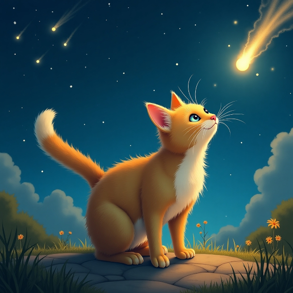
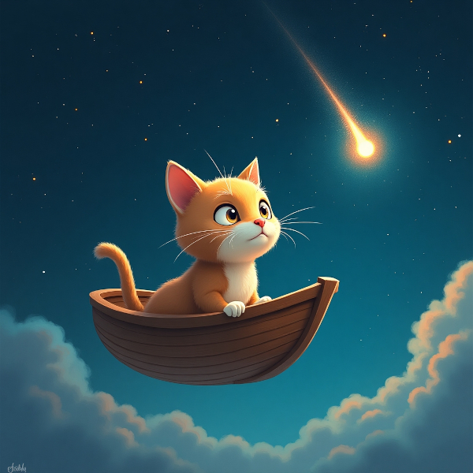
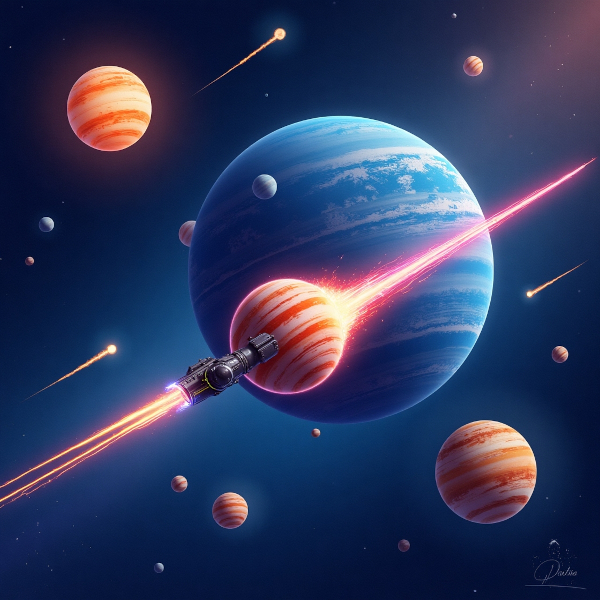
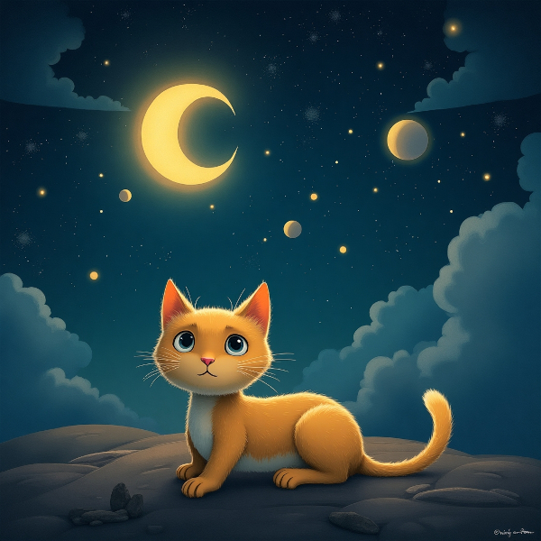

O chamado para a aventura
Astro era um gato comum que gostava de cochilar sob o céu estrelado do quintal de sua casa. Naquela noite, porém, algo estranho aconteceu.
O céu se iluminou com um meteoro dourado que cruzou o horizonte, deixando um rastro cintilante. Astro, curioso como todo gato, ergueu as orelhas. De repente, uma voz suave e misteriosa ecoou do além:
"Astro... Você foi escolhido! A galáxia precisa de você para salvar os planetas dos Cometas Perdidos!"
Astro piscou lentamente, confuso. "Miau?", pensou ele.

A decisão corajosa
Astro olhou para o céu, que continuava brilhando com fragmentos do meteoro. Ele sabia que algo especial estava prestes a acontecer.
Ao lado de sua tigela de ração, uma nave prateada pousou suavemente no chão. Era pequena, mas perfeita para um gato aventureiro. Astro ajeitou seu capacete improvisado — um pote de vidro transparente — e entrou na nave sem hesitar.
"Preparando decolagem em 3, 2, 1..."
A nave disparou pelos céus, atravessando nuvens e estrelas, enquanto Astro sentia suas patinhas formigarem de emoção.

O encontro com os cometas
A galáxia era um espetáculo de cores e luzes. Planetas de todos os tamanhos giravam como bolas coloridas em uma pista de dança cósmica. Mas Astro não estava ali para turismo estelar.
De repente, ele avistou os Cometas Perdidos — enormes, flamejantes e descontrolados, ameaçando colidir com um planeta azul reluzente.
"Alerta! Alerta!", disse a voz robótica da nave.
Astro sabia o que precisava fazer. Com um salto ágil, ele apertou o botão de dispersão estelar, liberando uma explosão de luz que envolveu os cometas e os fez desaparecer no infinito.
"Missão cumprida!", pensou Astro, com o rabo erguido em triunfo.

Retorno triunfante
Astro retornou à Terra como um verdadeiro herói cósmico. Quando a nave pousou suavemente no quintal, os outros gatos do bairro já estavam esperando por ele, seus olhos brilhando de admiração.
"Miau, o defensor do universo voltou!", pareciam dizer.
Astro olhou para o céu estrelado mais uma vez. Agora ele sabia que lá em cima havia aventuras esperando por aqueles corajosos o suficiente para responder ao chamado.
Com um ronronar satisfeito, ele voltou ao seu cobertor favorito, mas desta vez, com o coração cheio de estrelas.
